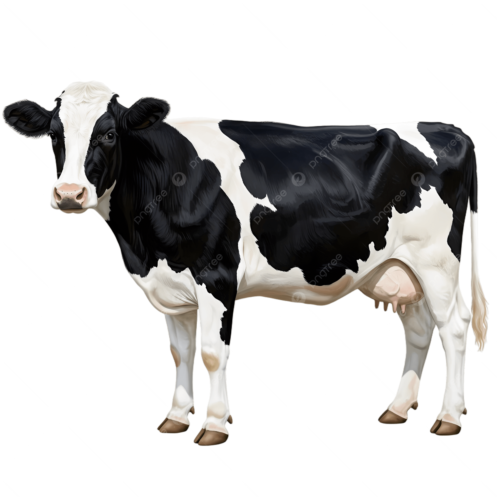

Software for the parts of life that do not arrive as clean data.
I’m Quinton. I like turning messy, real-world inputs into software people can actually use. Lately that has meant cameras, voice commands, handwritten notes, mission data, and small everyday tools.
Cameras, voices, handwritten pages, orbital data, and the small routines that refuse to fit inside a clean form.
Camera
Voice
Orbit
Ink
Case 03 / About / Quinton
Technical curiosity, with a business question attached.
I study computer science and keep coming back to backend and full-stack development, data systems, optimization, geospatial computing, and computer vision.
The business side keeps me asking who a piece of software is for, what it replaces, where it fails, and whether it is useful enough to keep.
Right now: tightening project validation, building clearer case studies, and learning by shipping.

Field assistant
Case 04 / Open channel
Have an interesting problem?
I like hearing from people with a real problem, an odd technical idea, or useful work already underway.
Open to internships · 2026
Software engineering, product-minded development, data, computer vision, or the useful space between them.